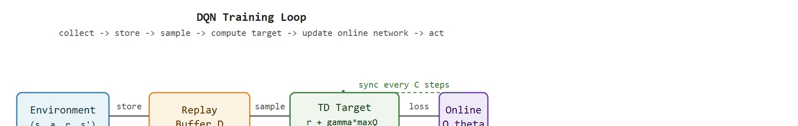
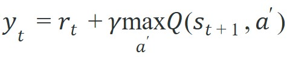
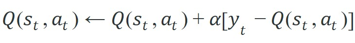
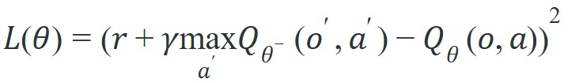

"Tell me what every move is worth from here, and I will never need to know the destination in advance."
A Deep Q-Network Seeing Its First Frame
This section assumes familiarity with the Bellman equations (section 2.6) and the distinction between on-policy and off-policy learning (section 14.4). The two stabilizers introduced here, experience replay and target networks, are examined in depth in section 16.2, and the same Q-value foundation underpins the distributional and multi-step extensions covered in section 16.3.
A warehouse robot misses a shelf edge, recovers, and keeps going, all without a human in the loop. What made that possible was not a trajectory planner but a table of action values learned from millions of replayed transitions. Q-learning gave robotics its first scalable off-policy signal: assign a number to every (state, action) pair, update it after each step, and let the greedy choice emerge without waiting for episode end. Deep Q-networks then pushed that idea into pixel-level perception, and the same stabilizers that made Atari agents work now underpin continuous control pipelines in real labs. Here you will derive the Bellman update, implement a DQN training loop, and see exactly why experience replay and target networks together tame the deadly triad that would otherwise cause divergence.
A robot can fumble a grasp under noisy exploration, never once execute the clean version, and still learn precisely what that clean grasp was worth. That single counterintuitive ability is what makes Q-learning off-policy: it recovers the value of the best possible behavior from data generated by a clumsier, more exploratory one. As Figure 16.1A shows, a deep Q-network turns that idea into a single forward pass that maps an observation to one value per action, with the argmax (the action whose value is highest, written $\arg\max_a Q(s,a)$) selecting the action to deploy. Reliable off-policy learning depends on fixing four things before any comparison with policy-gradient methods: replay semantics, the environment API, target computation, and GPU-scale batching.
Q-learning answers a specific embodied-agent problem: the robot often cannot wait for a full episode to learn whether a push, turn, or grasp was useful. It needs a local training signal after each transition, even when the reward is delayed and the next state is only partially observed.
That signal builds in three stages: the tabular Bellman update, the deep Q-network version that predicts action values from observations, and the stabilizers that make DQN usable when pixels, proprioception, and contact events keep changing the data distribution. A Q value that cannot survive noisy sensors and shifting replay distributions is not a value; it is a number waiting to mislead the policy at exactly the wrong moment. Figure 16.1B traces that full training cycle from collected transition to updated network.

$Q(s,a)$ estimates the return after taking action $a$ in state $s$ and then behaving well afterward. The promise is useful only if the state encoding contains the facts the action needs: object pose, gripper load, velocity, contact state, and any hidden context that changes the next consequence.
In tabular Q-learning, the agent updates one state-action entry after observing a transition $(s_t, a_t, r_t, s_{t+1})$. The target is the reward now plus the best discounted value the agent currently believes is available next, a recursive relationship formalized by the Bellman equations:

The update moves the old estimate toward that target:

The bracketed term is the temporal-difference (TD) error. In an embodied task, a positive TD error says the action produced a better consequence than expected, such as a door moving farther than predicted. A negative TD error says the action was overvalued, such as a grasp that looked good from the camera view but slipped under load.
So far: a Q value is updated toward a one-step target built from the immediate reward plus the discounted best next-state value, and the gap between that target and the current estimate (the TD error) is the training signal; the next part covers how the discount factor sets how far ahead that target looks.
The discount factor $\gamma \in [0,1)$ weights future rewards against immediate ones. In embodied AI this is not a mathematical convenience. A robot has finite battery, accumulates mechanical wear, and faces safety constraints that make distant rewards genuinely less reliable than near ones. Setting $\gamma$ close to 1 tells the agent that a reward 50 steps away is almost as valuable as one now; setting it lower makes the agent prefer quick, certain payoffs. Mechanically, $\gamma$ compounds with depth: a reward $k$ steps ahead contributes $\gamma^k$ to the current Q value. For $\gamma = 0.9$, a reward 20 steps out is worth only $0.9^{20} \approx 0.12$ of its face value. In practice, this exponential decay typically biases the learned Q values toward actions with near-term consequences over those with distant ones, since the distant reward's contribution to the target shrinks geometrically with every additional step of bootstrapping. Sensing a distant reward through repeated discounting is like trying to feel a 1-gram weight through a thick winter glove. The signal is physically present, but the insulating layers attenuate it so much that the network can barely distinguish it from noise. That attenuation is exactly why contact events 30 steps before a terminal success rarely drive reliable gradient updates without multi-step returns.
A Deep Q-Network (DQN) replaces the table with a neural network $Q_\theta(o,a)$, usually trained by minimizing the squared TD error over replayed transitions:

$Q_\theta$ is the online network being trained. $Q_{\theta^-}$ is a slower target network that supplies the bootstrap value, which prevents the target from chasing every small online update.
That completes the three-part promise from the start of this section: the Bellman update above is the tabular target derived from first principles, the algorithm box below turns it into a runnable DQN training loop, and the deadly-triad discussion that follows shows exactly why experience replay and target networks are both required to keep that loop stable.
The number of environment steps a DQN agent needs before its Q values stabilize on a simple Atari game depends almost entirely on the two stabilizers below, not on network size or reward scale.
DQN needs its two stabilizers for a specific reason. Function approximation (using a neural network to estimate Q values for states it has never exactly seen, instead of storing one entry per state-action pair), bootstrapping, and off-policy learning together form the deadly triad of divergence. Each ingredient alone is manageable, but all three at once cause value estimates to spiral. Target networks and experience replay break the correlation between consecutive updates. That correlation is what drives the divergence. The scale of the difference is concrete: without a target network, Q values on Atari games routinely diverge within 500,000 steps. With a frozen target refreshed every 10,000 steps, the same network trains stably for 50 million steps and reaches human-level scores on a majority of the 49-game suite (Mnih et al., 2015).
Think of the deadly triad like seasoning a soup while simultaneously tasting it and adjusting the recipe. Approximation is using one sip to judge the whole pot. Bootstrapping means you are seasoning based on how you expect the soup to taste in a minute, not how it tastes now. Off-policy data means some of the sips came from a different pot. Each habit is tolerable on its own, but together they form a feedback loop: your estimate changes the target, the target changes your estimate, and neither has a stable anchor, so the flavors spiral wildly until the soup is inedible. A frozen reference bowl (the target network) and a diverse tasting log (experience replay) break that loop by giving each update something that does not move while you stir.
Input: environment with discrete action set $\mathcal{A}$, online network parameters $\theta$, target network parameters $\theta^-$, replay buffer $\mathcal{D}$, learning rate $\alpha$, discount $\gamma$, target-sync interval $C$, exploration schedule $\epsilon(t)$ (the epsilon-greedy schedule: with probability $\epsilon(t)$ take a random action instead of the greedy one, so the agent keeps exploring instead of only ever repeating what it already believes is best)
Output: trained online network $Q_\theta$ whose greedy policy $\pi(o) = \arg\max_{a} Q_\theta(o,a)$ maximises expected return
Human-level control through deep reinforcement learning (Mnih et al., Nature 2015): experience replay and a target network stabilize Q-learning with neural function approximation across 49 Atari games from raw pixels. It is the result that made value-based deep RL a practical tool for embodied agents that must learn control from high-dimensional sensors.
Q-learning is off-policy because the update uses the greedy action in the next state, even if the collected behavior was exploratory. For an embodied agent this is the difference between learning only from what it dared to try and learning what it should have done: a Franka Panda arm that fumbled a grasp under epsilon-greedy noise (a policy that picks a random action with probability epsilon and the greedy action otherwise) can still back out the value of the clean grasp it never executed, because the max operator evaluates the better next-state action regardless of which one the gripper actually took. That is a strength for data reuse, but it also means the learned value can become confident about actions the current data barely covers, such as a fast reorientation that appears in only a handful of the 100,000 replayed transitions and was never tried under the object pose now in front of the camera.
Code Fragment 1 traces a single TD update with small numbers. The robot chooses a forward nudge, receives a small penalty for contact force, but the next state has one action that looks promising.
# Trace one Q-learning update with concrete values.
# The TD target combines immediate contact cost with the best next action value.
alpha = 0.25
gamma = 0.90
old_q = 0.40
reward = -0.10
next_action_values = [0.20, 0.80, 0.35]
target = reward + gamma * max(next_action_values)
td_error = target - old_q
new_q = old_q + alpha * td_error
print(f"target={target:.2f}")
print(f"td_error={td_error:.2f}")
print(f"updated_q={new_q:.2f}")target, td_error, and new_q show how one transition changes an action value. The update is modest because alpha is 0.25, which keeps one noisy contact event from rewriting the policy.This numeric trace is the same logic DQN applies at scale. The difference is that DQN computes the current value and the target value with neural networks, then uses gradient descent to reduce the TD error over many replayed transitions.
Before scaling to networks, it helps to watch that single update fire twice in a row so the backward propagation of reward becomes visible by hand.
Trace the update rule with $\alpha = 0.5$, $\gamma = 0.9$, and two actions per state. Start with all Q values at 0. The robot is in state $s_0$.
Transition 1: take action $a_0$ in $s_0$, receive $r = 1$, land in $s_1$. Current next-state values are $Q(s_1, \cdot) = [0, 0]$, so the target is $y = 1 + 0.9 \times \max(0, 0) = 1.0$. The TD error is $1.0 - 0 = 1.0$. Update: $Q(s_0, a_0) \leftarrow 0 + 0.5 \times 1.0 = 0.5$. Now $Q(s_0, a_0) = 0.5$.
Transition 2: later, take action $a_1$ in $s_1$, receive $r = 0$, land back in $s_0$. The next-state values are now $Q(s_0, \cdot) = [0.5, 0]$, so the target is $y = 0 + 0.9 \times \max(0.5, 0) = 0.45$. The TD error is $0.45 - 0 = 0.45$. Update: $Q(s_1, a_1) \leftarrow 0 + 0.5 \times 0.45 = 0.225$. Now $Q(s_1, a_1) = 0.225$.
Notice how the reward of 1 from transition 1 propagated one step backward into $Q(s_1, a_1)$ during transition 2, attenuated by $\gamma$ and $\alpha$. Repeated sweeps push that signal further back through the state graph, which is exactly how a one-step rule learns long-horizon value.
After the TD target is clear, Stable-Baselines3, CleanRL, and Tianshou provide maintained DQN implementations that handle replay sampling, target-network synchronization, epsilon schedules, batching, and logging. The important engineering choice is not the library name alone, it is whether the observation wrapper and reward design preserve the physical facts the Q value needs.
The max operator can turn overestimated action values into policy choices. In embodied settings this looks like a robot repeatedly selecting a rare action that looked good in a small part of replay, then discovering that the action fails under a new object pose, friction level, or camera angle.
A common assumption is that because Q-learning is off-policy, any transition stored in the replay buffer remains valid training signal indefinitely. In a stationary simulation this is roughly true, but in embodied AI the assumption breaks silently: a robot operating in the real world encounters shifting friction, changing lighting, tool wear, and sensor drift, so transitions collected under one physical regime can actively mislead the Q network about value in the current regime. The correct mental model is that off-policy means the behavior policy that collected data need not match the target policy being improved, not that old data is costlessly reusable across environment changes. In practice, replay buffers for embodied agents must be sized and managed so that obsolete transitions are evicted before they corrupt bootstrap targets.
To suppress the systematic overestimation caused by the max operator, enable Double DQN by passing use_double_dqn=True in Stable-Baselines3 or the --double flag in CleanRL. This decouples action selection (online network) from action evaluation (target network), which is especially important in embodied tasks where a handful of high-variance contact transitions can push one action's Q value artificially high and lock the policy into a brittle behavior. Switching on Double DQN costs nothing at runtime and routinely eliminates the "confident wrong action" failure described above.
In the RoboNav benchmark (Clearpath Jackal in Isaac Sim, 4 discrete actions: forward 0.5 m/s, left 30 deg, right 30 deg, stop), a DQN trained with a 100,000-transition replay buffer and a target network frozen for 2,000 steps reaches 87 % corridor-completion at 50 Hz. The fragility surface appears when the same checkpoint is evaluated in the real Jackal under flickering warehouse LED lighting: completion drops to 61 % because the convolutional encoder was never exposed to 5 Hz luminance flicker in simulation. Grounding the replay buffer with 20 % of transitions collected under randomized Isaac Sim lighting (0.3 to 1.8 lux multiplier) restores real-world completion to 79 % without retraining the Q-head. The lesson for embodied DQN is specific: replay coverage of the sensor-noise distribution matters as much as coverage of the state-action space.
DeepMind and the Swiss Plasma Center used deep reinforcement learning with a value-based critic to control the 19 magnetic coils of the TCV tokamak, sculpting the plasma into target shapes that previously required hand-tuned controllers. The agent learns Q-style value estimates over coil-voltage actions in a high-fidelity simulator, then transfers zero-shot to the real reactor, holding plasma configurations like elongated and droplet shapes for hundreds of milliseconds. It is a striking case of an off-policy value signal driving a safety-critical embodied control loop at kilohertz rates.
The target network is a frozen copy of yourself that you use as a reference. Update it too fast and you are arguing with yourself. Never update it and you are arguing with your past.
Foundation-model Q-functions (2024-2026). Large pretrained vision-language models are being used as frozen or fine-tuned encoders for Q-networks, enabling zero-shot transfer across object categories and scene layouts. Google DeepMind's RoboCat and the RT-X collaboration (2023-2024) established the data-sharing paradigm; follow-on work such as UniSim (Yang et al., 2024, NeurIPS) shows that world-model pretraining can supply synthetic transitions that fill the replay coverage gaps that pure real-world collection cannot. The practical payoff is a Q-network that evaluates novel object configurations without retraining the full value head.
Offline-to-online Q-learning with uncertainty quantification (2024-2025). Conservative Q-Learning (CQL) and IQL established the offline baseline, but 2024 work such as Cal-QL (Nakamoto et al., 2024, NeurIPS) and RLPD (Ball et al., Berkeley/CMU) shows that initializing from offline data and then fine-tuning online converges orders of magnitude faster than training from scratch, provided the Q-network knows which state-action regions are out-of-distribution. Ensemble disagreement and epistemic neural networks are now standard uncertainty proxies in these pipelines. The open-source RLPD codebase has become a reference implementation for this regime.
Distributional and risk-sensitive Q-learning for contact-rich manipulation (2024-2026). Rather than estimating the expected return, distributional RL methods (C51, QR-DQN, DSAC) learn the full return distribution, which lets a robot distinguish "high mean, high variance" from "moderate mean, safe variance" grasps. Recent work from the Robotics at Google team (2024) and the Toronto Robotics Group applies distributional Q-functions to in-hand manipulation tasks where contact force is stochastic, showing 15-30 percent reductions in unsafe force events compared to mean-value DQN baselines.
Open problem for PhD students. All three directions above assume that the replay buffer indices can be trusted: a transition labeled as (state, action, reward, next-state) actually reflects the physical dynamics at the moment of collection. In lifelong embodied deployment, tool wear, sensor recalibration, and environment changes break that assumption silently. There is no principled, computationally cheap method to detect which stored transitions have become stale and should be down-weighted or evicted before the next gradient update. A student who solves this, perhaps via lightweight environment fingerprinting or transition-level distributional shift detection, would close one of the most practically limiting gaps between offline/online Q-learning in the lab and continuous deployment on real hardware.
For a DQN policy, can you identify the immediate reward, the bootstrap value, the target network, and the action selected by the max operator? If any of those are missing from the log, the TD update cannot be audited.
The DQN design is a compromise between a clean Bellman equation and messy embodied data. Replay breaks short-range temporal correlation, the target network slows down the bootstrap target, and epsilon-greedy exploration keeps collecting non-greedy actions. Each stabilizer answers a specific failure: correlated frames, moving targets, and premature certainty.
For embodied agents, the hidden assumption is that the replay distribution contains enough coverage around the actions the greedy policy will later choose. If the robot learned mostly from safe, slow motions, the Q network may assign unreliable values to fast recovery actions that appear rarely but matter during deployment.
| Tool or Library | Role in the Topic | Builder Advice |
|---|---|---|
| Gymnasium | Environment API | Use it to expose discrete actions, rewards, termination flags, and seeded evaluation episodes. |
| CleanRL | Readable DQN baseline | Use it when you want a short implementation whose replay and target-network choices can be inspected. |
| Stable-Baselines3 | Maintained DQN training | Use it for repeatable baselines with logging, checkpoints, vectorized environments, and wrappers. |
| Tianshou | Off-policy components | Use it when replay buffer variants, collectors, and policy modules need to be swapped cleanly. |
| ROS 2 | Hardware interface | Use it only after simulation logs prove that the value policy is stable under perturbations. |
A robust DQN implementation starts with one inspectable Bellman update, then scales to replay and target networks. Code Fragment 2 records the fields that make a DQN run auditable: the online estimate, target estimate, TD error, and data-source label.
# Build one audit record for a DQN target computation.
# Keeping target parts separate makes bootstrapping errors visible.
from dataclasses import dataclass, asdict
@dataclass
class DQNAuditRecord:
transition_id: str
action: str
reward: float
online_q: float
target_q: float
td_error: float
source: str
def as_row(self) -> dict[str, object]:
return asdict(self)
record = DQNAuditRecord(
transition_id="episode_014_step_032",
action="nudge_forward",
reward=-0.10,
online_q=0.40,
target_q=0.62,
td_error=0.22,
source="replay: low-friction block",
)
print(record.as_row())DQNAuditRecord stores the action value, target value, TD error, and replay source for one transition. This makes it possible to trace whether a policy improvement came from real task evidence or from a fragile bootstrap estimate.When DQN fails, trace the bad action to one of five causes: perception error, reward misspecification, poor replay coverage, target-network lag, or overestimated bootstrap values. Rerun the same evaluation panel, saving frames, selected actions, max-Q values, and TD errors. Those four fields turn a vague weak-model complaint into a diagnosis.
For DQN, compare success rate, return, collision count, and TD-error quantiles only when they are co-computed in one pass on one configuration: same environment panel, same checkpoint, same seed set, same perturbation suite, and the same success definition. Save replay samples and evaluation videos with the metric table so every number can be traced to the transitions that produced it.
DQN is the right starting point when the action space is small and discrete (fewer than roughly 18 actions), the replay buffer can realistically cover the parts of state space the greedy policy will visit, and the environment is stationary enough that old transitions remain valid training signal. It performs well in Atari-style tasks and in discrete navigation or manipulation problems where each action is a named move. It struggles when actions are continuous (use SAC or TD3 instead), when the environment changes between collection and training so that replayed transitions describe a world the agent no longer inhabits, or when contact dynamics vary so much across episodes that Q values learned from one friction regime mislead the policy in another. In those cases the off-policy assumption that old data is still relevant breaks before the value estimates converge.
Once those suitability conditions are settled and the algorithm is the right fit, everything in this section collapses into a single durable lesson about what makes the bootstrapped target trustworthy.
Q-learning is powerful because a one-step target can train long-horizon behavior, but DQN needs replay coverage and target-network discipline before those bootstrapped targets are trustworthy in an embodied loop.
For a discrete navigation or manipulation task, write one DQN audit row with observation summary, action id, reward, online Q value, target Q value, TD error, and replay source. Then state which field would reveal a bootstrapping error.
Beginner (weekend): Discrete navigation agent in Gymnasium. Build a DQN agent that solves the FrozenLake or MiniGrid discrete navigation environment using Stable-Baselines3, logging TD errors and Q values for every step so the replay-coverage gap becomes visible. The key challenge is choosing a reward shaping and epsilon schedule that keeps the replay buffer from filling with the agent spinning in place.
Intermediate (1-2 weeks): DQN pick-and-place with discretized actions in PyBullet. Train a DQN policy on a PyBullet tabletop task where the action set is discretized into 12 named gripper moves (four cardinal translations, two heights, grasp, release); use CleanRL as the baseline and instrument the audit record from Code Fragment 2 to trace which replay transitions drive each policy improvement. The key challenge is preventing the max operator from locking the policy onto one high-variance grasp action before the replay buffer has seen enough contact diversity.
Goal: see firsthand how the target network stops Q values from spiraling, and measure the cost of removing it.
Tools: Python, Gymnasium (CartPole-v1), and Stable-Baselines3 (pip install gymnasium stable-baselines3). About 20 minutes including two training runs on CPU.
Steps: Train a default DQN("MlpPolicy", "CartPole-v1") for 50,000 timesteps and log mean episode return plus the mean predicted Q value (pull it from the replay buffer via a short evaluation callback). Then train a second agent with the target network effectively disabled by setting target_update_interval=1 so the bootstrap target chases every gradient step.
What to vary: sweep target_update_interval over {1, 100, 1000, 10000} and, separately, set buffer_size very small (e.g. 500) to cripple experience replay.
What to observe: with a fast or absent target sync, mean predicted Q values inflate well above the maximum achievable return (200 for CartPole) and the return curve becomes unstable or collapses; with a slow target sync and a large buffer, predicted Q values track the true return and learning is smooth. You will have reproduced two-thirds of the deadly triad and watched both stabilizers earn their place.
This section turned Q-learning; deep Q-networks into a testable embodied-learning contract: define the loop, choose the tool, save one comparable artifact, and diagnose failure by interface. Next, continue with Section 16.2, where the same evaluation habit carries into the next reinforcement-learning decision.
Identifies and fixes the Q-value overestimation problem in DDPG through three mechanisms: clipped double critics, delayed policy updates, and target-policy smoothing. Read Section 4 for each fix and the ablation in Section 5; these three tricks are now standard practice for off-policy continuous-control and appear directly in SAC variants.
Haarnoja, T. et al. (2018). Soft Actor-Critic. ICML.
Combines off-policy learning with a maximum-entropy objective, adding an automatic temperature parameter that balances exploration and exploitation without manual tuning. Read Section 4 for the soft Bellman equation and the entropy temperature update; SAC is the most widely used off-policy baseline for continuous robot control tasks.
Mnih, V. et al. (2015). Human-level control through deep reinforcement learning. Nature.
Demonstrates that replay buffers and target networks together stabilize Q-learning with neural function approximators. Read Section 2 for the DQN algorithm and the supplementary for network architecture; replay and target-network ideas appear in every subsequent off-policy deep RL method including DDPG, TD3, and SAC.
Lillicrap, T. P. et al. (2015). Continuous control with deep reinforcement learning. arXiv.
Adapts DQN to continuous action spaces by combining a deterministic policy gradient actor with a Q-function critic and using replay and target networks from DQN. Read Algorithm 1 for the full update loop; DDPG is the direct predecessor to TD3 and understanding its overestimation problem motivates TD3's twin-critic design.
Watkins, C. J. C. H., and Dayan, P. (1992). Q-learning. Machine Learning.
The canonical derivation of tabular Q-learning and its convergence proof. Read to understand the off-policy update rule and why the max over next-state actions makes Q-learning off-policy by construction; this distinction carries through to DQN and all its successors.
A modular PyTorch RL library with clean separation between collector, trainer, and policy components. Use it to prototype off-policy algorithms without reimplementing replay buffers and target-network logic; the policy abstraction makes it straightforward to compare DQN, DDPG, TD3, and SAC in a common framework.